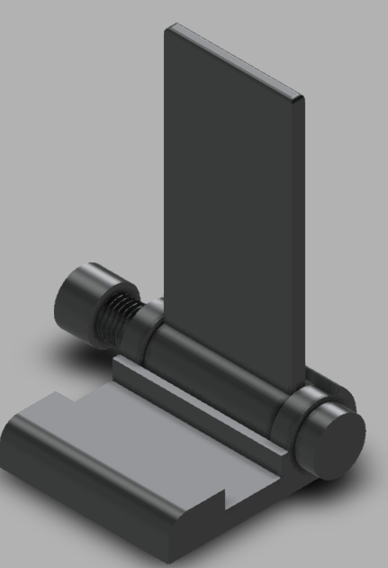
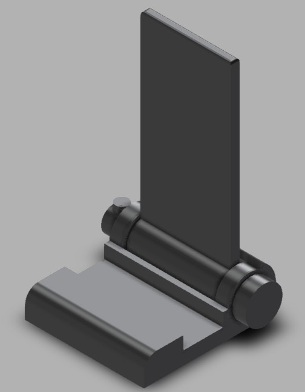
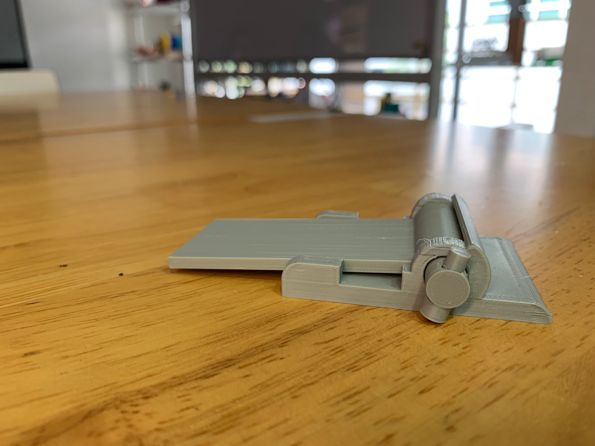
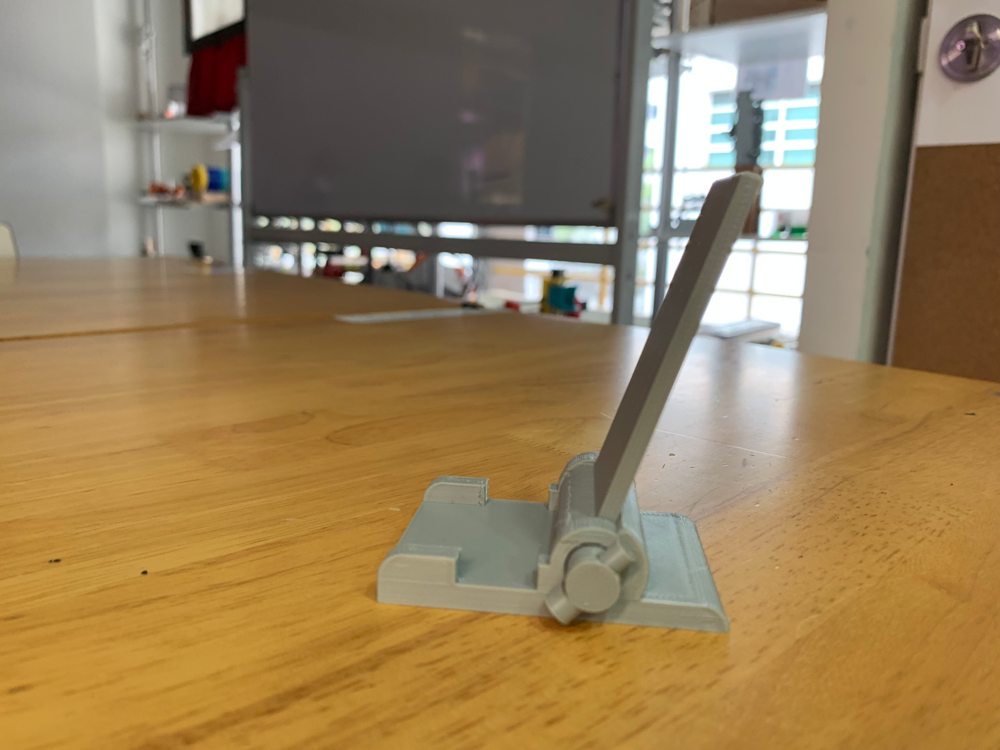
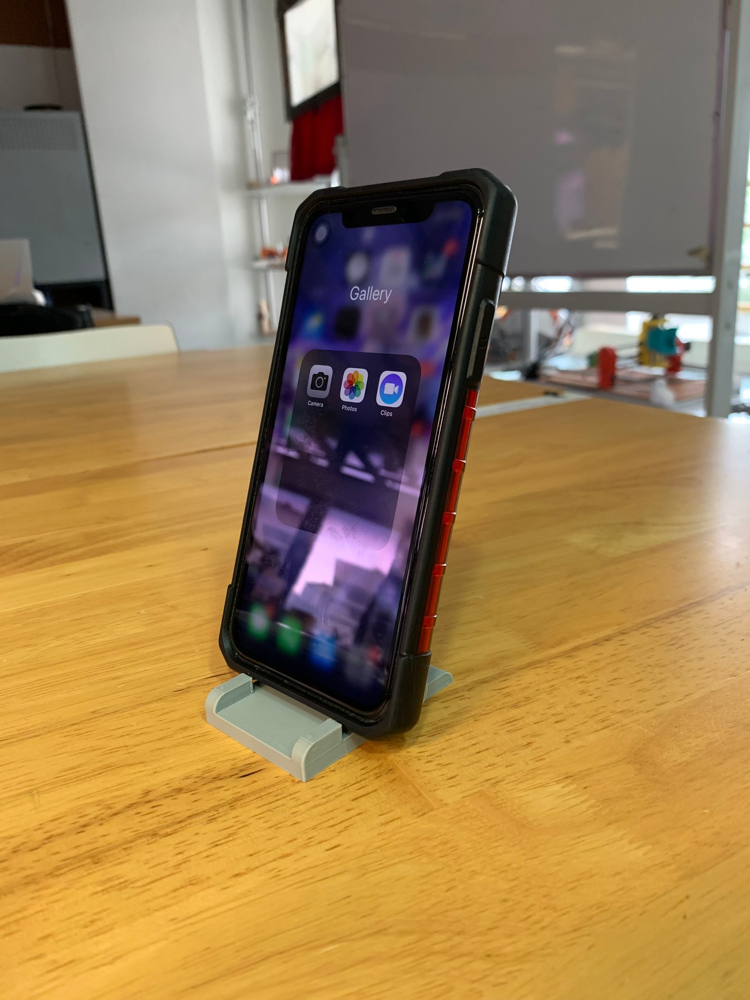

Project navigation
CAD part 1(GIMP, Inkscape, Fusion 360) • CAD part 2(Fusion 360 and chess piece) • Phone Stand • Laser-cut accessories box
Phone stand
Design
Using Fusion 360, I designed the following phone stand.
However, being unhappy with the design, I went back and added some moving parts to make the design more compactable.
(Side note: When trying to embed these fusion 360 files I can't go back to the threaded and old versions, yet I can use my first versions?)
I also realised at this point that a pin-locking system was much easier to hold the hinge pin in place than a threaded system.
After sending it to printing, I realised that the phone stand would tip over when there was too much weight, so I had to redesign and print the base again. (I also forgot to take a picture of the old version before I never saw that base piece again.)
:(
I added some extra material to the back to the base and removed some material near the phone stopper to allow the back of the stand to close flush.
and with that, I was finally done with this phone stand!
  